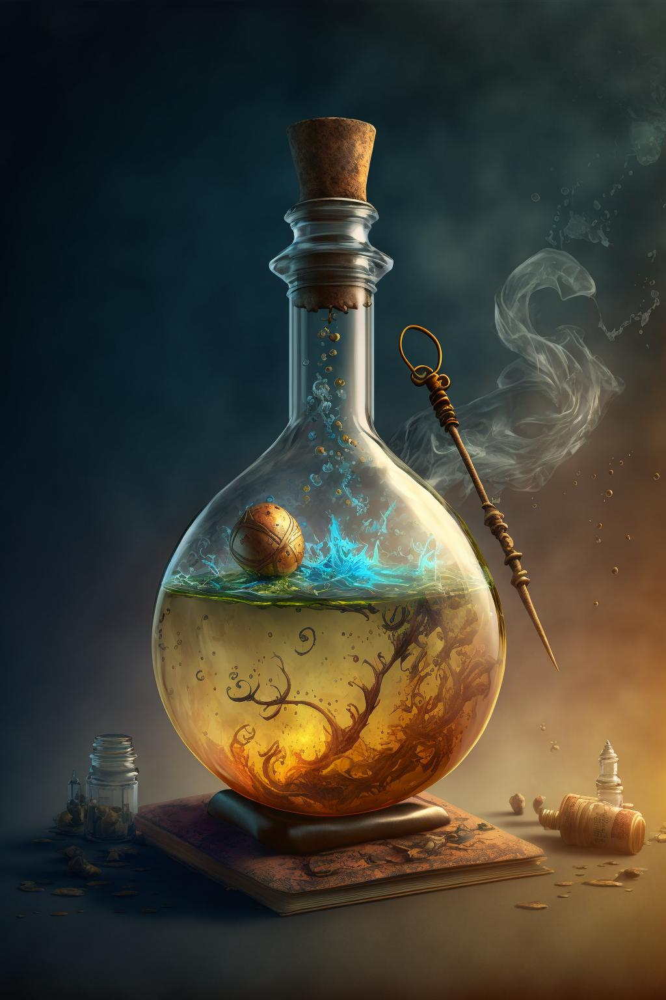

Potion of Comprehension

Description
When you drink this potion, you gain the effect of a comprehend languages spell for 1 hour. This liquid is a clear concoction with bits of salt and soot swirling in it.
| Attributes |
| Rarity: | Common |
| Value: | 100 gp |
| Weight: | 0.5 lbs |
Ingredients
- 200 grams Distilled Spring Water
- 30 grams Crystalized Knowledge
- 25 grams Arcane Honey
- 20 grams Mindbloom Petals
- 15 grams Wise Owl Feather Essence
- 10 grams Elixer of Clarity
- 5 grams Powdered Scribe's Quill
Instructions
- Step 1: Begin by plucking 20 grams of Mindbloom petals. These petals should be dried and powdered in a mortar and pestle until a fine, iridescent powder is achieved.
- Step 2: Extract the essence of a wise owl feather by steeping 15 grams of it in distilled spring water for several hours. This should produce a silvery liquid with a hint of owl wisdom.
- Step 3: Combine 10 grams of Elixir of Clarity, which is a rare potion that aids mental acuity. It should be readily available in alchemical shops.
- Step 4: Grind 5 grams of powdered scribe's quill into a fine, dark ink-like powder using a mortar and pestle.
- Step 5: Mix 25 grams of Arcane Honey with a small amount of distilled spring water, creating a rich, golden syrup infused with magic.
- Step 6: Crush 30 grams of crystalized knowledge, which can be found in rare geodes, into a fine crystalline powder.
- Step 7: In a cauldron, combine the Mindbloom powder, Wise Owl Feather essence, Elixir of Clarity, and Powdered Scribe's Quill. Stir gently, creating a deep blue mixture that shimmers with intellectual energy.
- Step 8: Gradually pour the Arcane Honey infusion into the cauldron, stirring to create a smooth, honey-like consistency.
- Step 9: Slowly add the powdered Crystalized Knowledge to the cauldron. This step is vital for imbuing the potion with wisdom and comprehension. Mix thoroughly.
- Step 10: Transfer the potion of comprehension into a vial, ensuring it's well-sealed to preserve its magical properties.
Back to Main Page